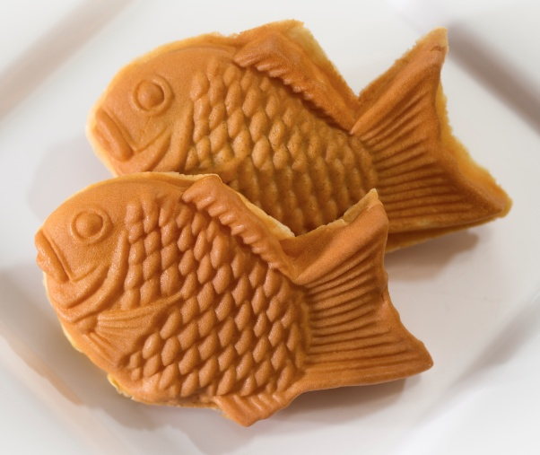

, a Traditional Japanese Wagashi Dessert.jpeg)
Yokan Review: "Een Zoete, Stevige Delicatesse"
Yokan is een klassieker die nooit teleurstelt. Deze stevige gelei van azukibonen is zowel rijk als subtiel in smaak. Ik hou vooral van de Yokan met kastanje, waarbij de stukjes kastanje een heerlijke textuur toevoegen. Het is perfect als een kleine zoete snack of als afsluiter van een Japanse maaltijd.

Taiyaki Review: "Een Zoete Verrassing in Elke Visvormige Cake"
Taiyaki is een plezier voor zowel ogen als smaakpapillen. De knapperige buitenkant en de zoete bonenpasta binnenin vormen een perfecte combinatie. Ik heb onlangs een variant geprobeerd met custardvulling, en het was verrukkelijk! Taiyaki is niet alleen een traktatie maar ook een stukje cultureel erfgoed dat je moet ervaren.

Mochi Review: "Een Zacht Wonder van Textuur en Smaak"
Mochi heeft mij altijd betoverd met zijn unieke textuur en veelzijdigheid. Deze zachte, plakkerige rijstcakejes zijn een basis van de Japanse zoetigheden en bieden een subtiele zoetheid die iedere smaakliefhebber zal bekoren. Onlangs probeerde ik een variëteit met groene theevulling, en het was een openbaring - de subtiele bitterheid van de matcha paste perfect bij de zoetheid van de mochi. Maar wat Mochi echt bijzonder maakt, is zijn veelzijdigheid; het kan worden genoten met zoete bonenpasta, ijs, of zelfs fruit. Elke hap is een zachte knuffel voor je smaakpapillen en een uitnodiging om de rijke texturen en smaken van de Japanse patisserie te verkennen. Mochi is niet alleen een lekkernij, het is een ervaring die je meeneemt op een reis door de delicate en elegante wereld van Japanse zoetigheden.

.jpeg)